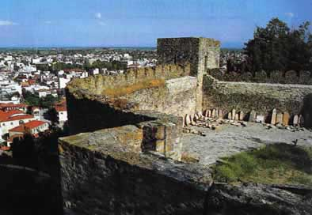

Το κάστρο των Τρικάλων
 Η θεμελίωση του φρουρίου των Τρικάλων, που ανάγεται στην ελληνιστική περίοδο, έγινε πάνω στα αρχαία υπολείμματα του τείχους της ομηρικής Τρίκκης. Σε μεταγενέστερους χρόνους έγιναν πολλές επεμβάσεις. Μετά την Δ΄ Σταυροφορία η πόλη ανήκε διαδοχικά στο δεσποτάτο της Ηπείρου, στη Βυζαντινή Αυτοκρατορία και στο σερβικό κράτος του Στέφανου Ντουσάν. Επαναστατικό κίνημα, χωρίς επιτυχία, εκδηλώθηκε από τον τοπικό μητροπολίτη Διονύσιο Β΄, τον γνωστό ως Φιλόσοφο ή Σκυλόσοφο, το έτος 1600. ¶λλοτε αρχαίοι ναοί και άλλοτε χριστιανικές εκκλησίες βρέθηκαν στο εσωτερικό του που χωρίζεται σε τρία επάλληλα τμήματα. | ||